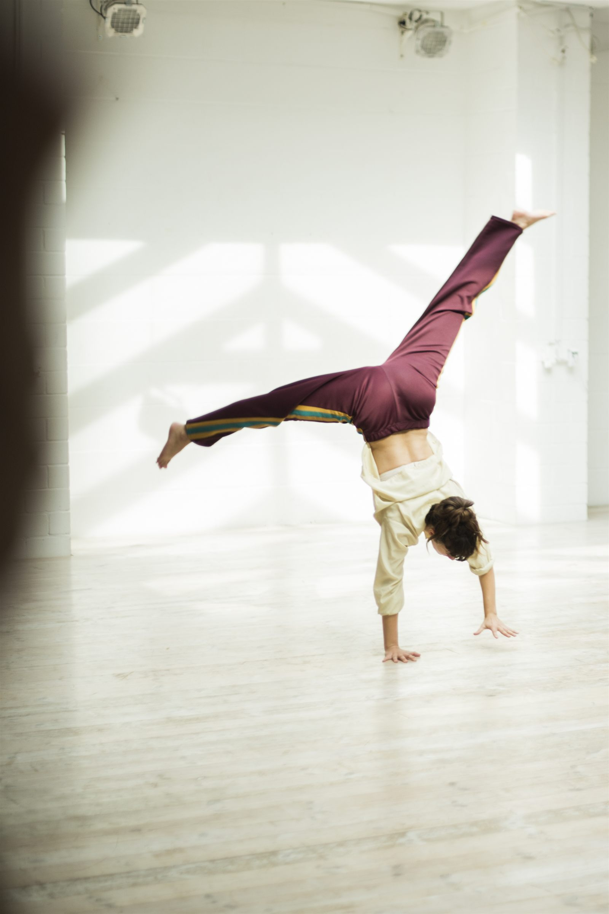
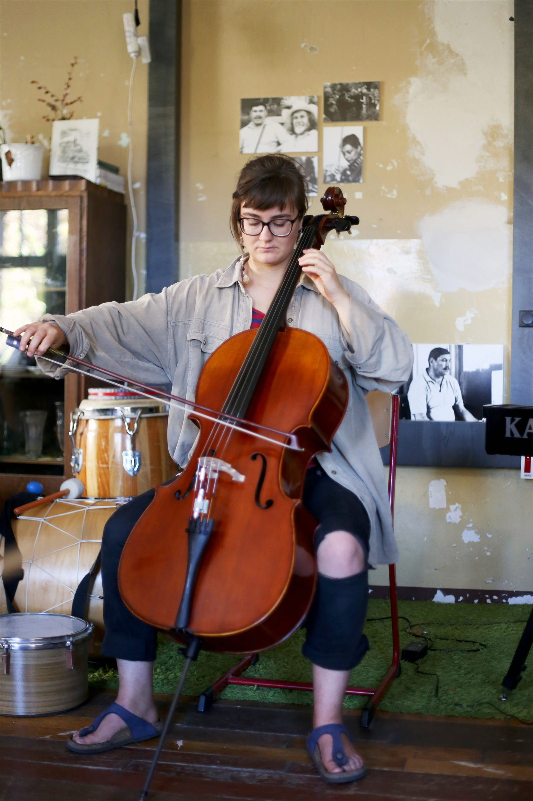
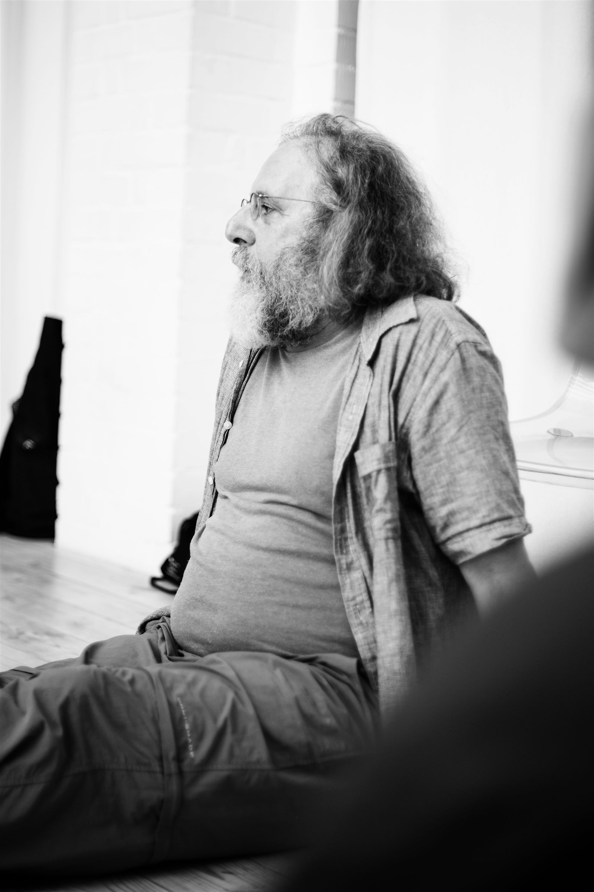

What is PTC?
Present-Time Composition (PTC) is an approach to improvisation that aims to develop the underlying sensibilities that enable us to create meaningful and complex forms together in the present moment. As a method, it is structured around different types and levels of exercises. Its first home is in music, but it has been developed for and continues to venture into other art forms.
Alan Bern began developing PTC in 2005 for a class attended by both classical and jazz student performers and composers at the University of Cincinnati. Since then, Alan and some of his students have introduced it to music and dance institutes, conservatories, universities, festivals, conferences and workshops with professional artists in Europe and North America. In 2017, a group of professional dancers and choreographers led by Valentin Rion and Ilana Reynolds began developing PTC_Dance as a sister to PTC_Music.
In fact, although PTC has existed for more than 20 years, every new research, teaching or performance situation gives rise to surprising new insights and methods. These relate to emergence, embodiment, synchronization, mirroring and other topics in cognitive science today.
Experience with PTC often goes far beyond music improvisation. For example, PTC training strongly affects a performer’s understanding and interpretation of existing composed or choreographed works. Through PTC, performers internalize the point of view of the composer/choreographer, which often aims at very different values than are typical for performers.

How does PTC work?
Through a series of step-by-step exercises, PTC seeks to heighten awareness of subtle inner impulses and explore how they both respond to and shape larger musical structures, including compositional form. Two basic principles guide this process: (1) each participant thinks first as a composer and only second as a performer, and (2) each participant is responsible for the entire creation at all times (not just their own part in it).
PTC starts by attending very closely to inner impulses: how they arise, what information they contain, and how we can respond to them. Far from being random noise, the flow of inner impulses is full of meaning that is a lightning-quick, embodied microcosm of everything happening all around us.
In a collective improvisation, this includes not only what’s publicly audible or visible, but crucially, the inner impulses of our fellow improvisers as well. That is what makes it possible to act in the moment with others, rather than simply reacting to the moment after it has already passed, which would leave us constantly lagging behind and chasing after what we are trying to create together.
Is this magic? No, it’s the fact that individual experience always participates in a social – intersubjective – dimension. By tuning in both the individual and the social information embodied in impulses, a group of improvisers can learn to make collective choices in each present moment, thereby creating content and structure from the level of the motif or phrase all the way up to large-scale form.
Complementing this “bottom-up” approach, PTC also incorporates “top-down” work. This resembles the training in musical analysis that composers receive, but serves a different purpose. For example, we select a favorite moment from a composed work and ask whether it could be improvised. If we think it could, we try to reconstruct what it would take to do so: What is the path from an inner impulse to this kind of musical moment? How do we collectively decide, through purely musical communication rather than stopping to discuss it, to embark on that path? Bit by bit, we develop and internalize this compositional knowledge so that it becomes available at the speed of an impulse.

Alan Bern & PTC
PTC registered trademark
Present-Time Composition (PTC)
A method to create music, dance, theater and any other performing art using individual and group improvisation following specific, graded exercises that develop this ability. The two fundamental principles are: i) each participant is a creator (composer/choreographer/author) first and a performer second, and ii) each participant is considered the creator of the entire performance at all times (not only of his/her own part). The exercises develop embodied performance knowledge by proceeding from basic, non-performative impulses through increasingly higher levels of organization and communication specific to each performance art.
Through analysis of existing performative works (compositions/choreographies/theatrical performances) rules are derived for exercises that enable individuals and groups to realize the underlying performance principles through improvisation.